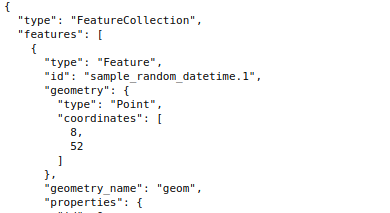

Wer hat an der Uhr gedreht?
Zeitbasierte Geodaten modellieren, abfragen und visualisieren
Jakob Miksch
Christian Mayer
meggsimum - Büro für Geoinformatik
FOSSGIS 2021, Rapperswil, 08.06.2021
Jakob Miksch - Christian Mayer


meggsimum
- meggsimum.de
- Dienstleistungen im Bereich GIS, Webmapping & GDI
- Maßgeschneiderte WebGIS-Lösungen
- Softwarekonzepte und Softwareentwicklung
- Geodaten
- Beratung und Schulung
Dimension Zeit
Projekt
sauber-projekt.deVektordaten
Als Attribut eines Features
Zeit als Attribut
Zeit als Attribut
Zeit in Rasterdaten
Standards
- WMS
- WFS
- WCS
WMS
WMS-TIME Capabilities
...
my-workspace:example-layer
Beispiel Titel
...
2020-07-22T02:00:00.000Z/2021-05-05T21:00:00.000Z/PT1H
...
...
WMS-TIME Beispiel Abfrage
http://www.example.com/geoserver/wms?
SERVICE=WMS&
VERSION=1.3.0&
REQUEST=GetMap&
FORMAT=image/png&
LAYERS=my-image&
TIME=2020-11-03T02:00:00.000Z&
WIDTH=256&
HEIGHT=256&
CRS=EPSG:3857&
BBOX=1,2,98,99
WFS
- Vektordaten
- Keine Time-Capabilities im Standard
- Unterschied WFS 1.1.0 vs. 2.0.0
Aggregation
| Station | Jahr | Wert |
|---|---|---|
| BONN | 2019 | 3.212 |
| BONN | 2020 | 4.352 |
| BONN | 2021 | 5.246 |
| KÖLN | 2019 | 23.23 |
| KÖLN | 2020 | 34.54 |
| KÖLN | 2021 | 54.23 |
Aggregation
| Station | Aggregierte_Werte |
|---|---|
| BONN | [ { "jahr": "2019", "wert": 3.212 }, { "jahr": "2020", "wert": 4.352 }, { "jahr": "2021", "wert": 5.246}] |
| KÖLN | ... |
WFS Beispiel Abfrage
http://www.example.com/geoserver/ows?
service=WFS&
version=2.0.0&
request=GetFeature&
typename=my-layer-name&
outputFormat=application/json&
srsname=EPSG:3857
&filter=...
Filter für WFS 1.1
only_day_date
2020-11-03T00:00:00.000Z
only_day_date
2020-11-03T00:00:00.000Z
geom
500405.8749640914 6401179.797636667
1062929.9254447466 6881316.273596153
Filter für WFS 2.0
my_sample_time
2020-11-02T08:00:00.000Z
my_sample_time
2020-11-02T08:00:00.000Z
geom
460609.53245007346,1212138.3945499265
6390594.1868154,1212138.3945499265
6390594.1868154,7032053.728184599
460609.53245007346,7032053.728184599
460609.53245007346,1212138.3945499265
WCS
rohe Rasterdaten (für v2.0)
http://www.example.com/geoserver/image_mosaics/wms?
SERVICE=WCS&
VERSION=2.0.1&
REQUEST=GetCoverage&
COVERAGEID=image_mosaics:nrw_pm10_gm1h24h&
SUBSET=time("2020-11-03T02:00:00.000Z")&
FORMAT=GeoTIFF
Weitere Standards
- OGC API Features
- OGC API Maps
- OGC API Coverages
- STAC - SpatioTemporal Asset Catalog
Server
- GeoServer
- MapServer
- QGIS Server
- ...
Clients
- QGIS Desktop
- OpenLayers
- Leaflet
- ...
QGIS
meteorologische Daten von
www.globalfloods.eu
OpenLayers - Wegue
Demonstrator Projekt SAUBER
mit Download via WCS
OpenLayers - Wegue
- Link Anwendung
- WMS-Dienst von LVermGeo Rheinland-Pfalz
Links
- Webapp: Zeitreise durch Rheinland-Pfalz
- Vortrag: Armin Retterath WMS Time Dimension (FOSSGIS 2018)
Impressum
Autor
Christian Mayer, Jakob Miksch
meggsimum - Büro für Geoinformatik
Schillerstraße 2a
67122 Mutterstadt
info@meggsimum.de
meggsimum - Büro für Geoinformatik
Schillerstraße 2a
67122 Mutterstadt
info@meggsimum.de
Lizenz
Diese Folien sind unter CC BY-SA veröffentlicht.